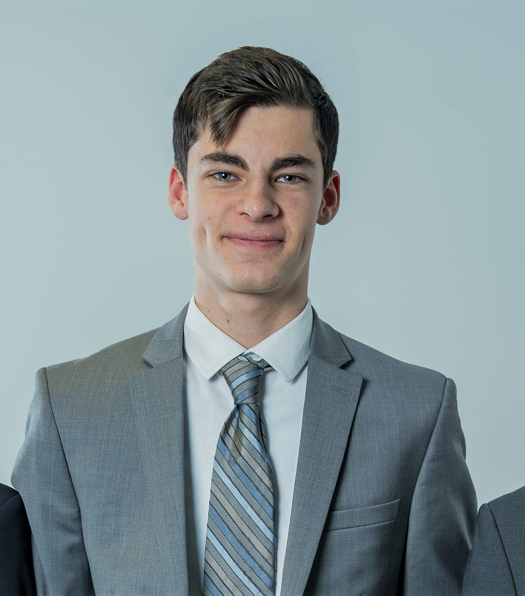
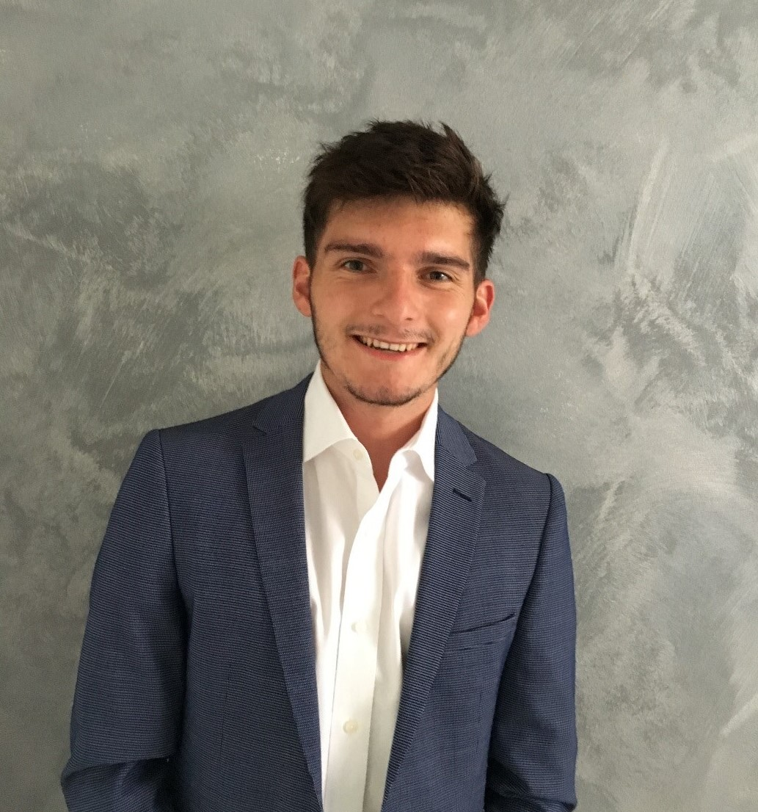
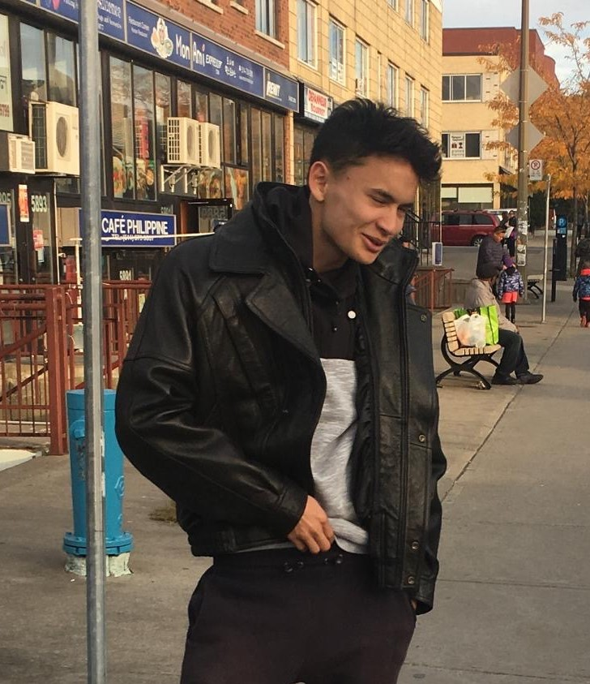

Qui-sommes nous ?
Responsable contenu
Je m’appelle Félix MERIAUX et j’ai 20 ans. Je suis né à Paris le 5 mars 2000, cette grande ville où j’y est effectué ma scolarité jusqu’à mon bac. Depuis, j’ai intégré EFREI Paris, école d’ingénieurs du numérique. Je termine actuellement ma deuxième année en section internationale. J’ai toujours été attiré par la découverte de l’inconnu et porte une grande importance à la nature et l’environnement depuis mon jeune âge. Je pense être une personne communicante, enthousiaste et social. Pour moi le travail d’équipe est ce qui peut mener à la réussite ! Durant mes années d’études, j’ai pu réaliser différents stages, dont un de deux mois à Los Angeles en 2019 et le plus récent est un stage en janvier 2020 dans une jeune entreprise éditant des livres de sciences humaines et de réflexion sur notre société actuelle ! Cet esprit de protection de l’environnement est un sujet très important de notre société actuelle et j’adorerais y contribuer, c’est pourquoi ce projet me tient à cœur !
Developpeur
Je m’appelle Benoit CLAUDIC et j’ai 20 ans. Je suis né à Paris le 25 mai 2000 et j’ai toujours habité à Levallois-Perret où j’y est effectué ma scolarité jusqu’à mon bac. Depuis, j’ai intégré EFREI Paris, école d’ingénieurs du numérique. Je termine actuellement ma deuxième année en section internationale. J’ai toujours été un fan de sport et j’ai joué au Hand pendant 8 ans au Levallois Sporting Club. Je pense être une personne dynamique, enthousiaste et souriant et j’adore travailler en équipe ! Grâce à mon école d’ingénieurs, j’ai pu réaliser différents stages, le dernier en date étant dans une start-up qui fournissait à des Hôtels, Restaurants et Entreprises des fontaines à eau micro-filtrée pour lutter contre la folie des bouteilles en plastique ! Cette expérience que je continue en temps partiel m’a donné envie d’effectuer des actions à mon échelle pour la planète, c’est pourquoi ce projet me tient à cœur !
Developpeur
Je m’appelle Yann MONNIER et j’ai 20 ans. Je suis né à Brest le 26 août 2000 et j’habite à gif-sur-yvette. J’ai fait une terminal S au lycée Blaise Pascal puis j’ai intégré EFREI Paris, école d’ingénieurs du numérique. Je termine actuellement ma deuxième année en section internationale. Je fais beaucoup de sport notamment du foot et du tennis. Ma passion c’est le piano. Avec l’aide de la société GrosBill, j'ai accompagné de nombreux clients à développer leurs catalogues de produits et à implémenter une stratégie internationale, tant en B2B qu'en B2C. J'ai appris à m'adapter à chaque demande pour proposer une offre entièrement personnalisée. Aujourd'hui, je désire élargir mes horizons et intégrer ma passion pour l’écologie dans ma carrière en étant au service d'une strat-up GREEN PARIS appréciée de ses consommateurs.